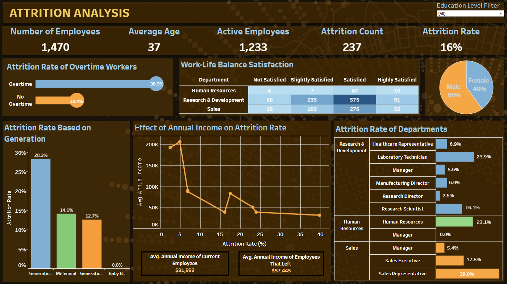
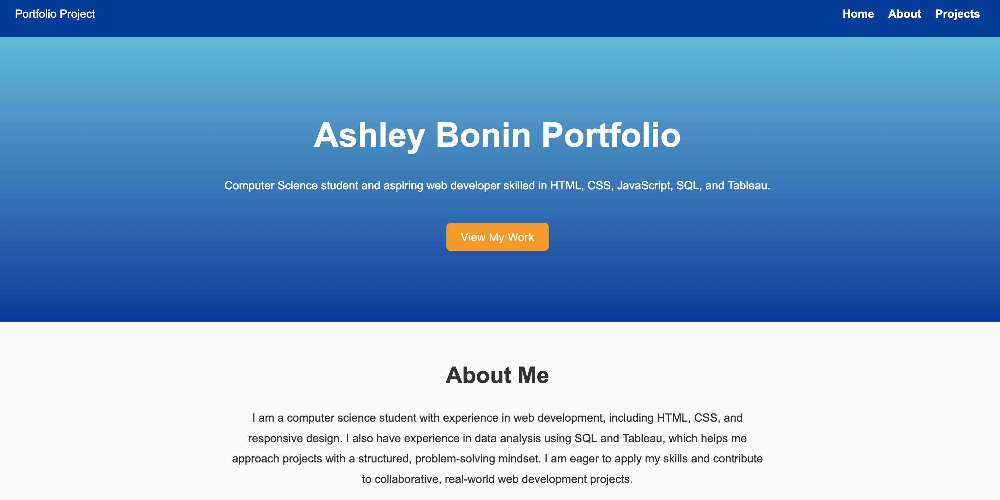
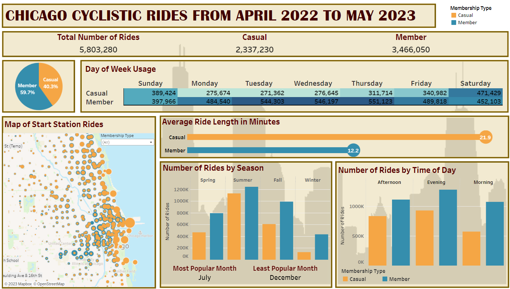

Computer Science student and aspiring web developer skilled in HTML, CSS, JavaScript, SQL, and Tableau.
I am a computer science student with experience in web development, including HTML, CSS, and responsive design. I also have experience in data analysis using SQL and Tableau, which helps me approach projects with a structured, problem-solving mindset. I am eager to apply my skills and contribute to collaborative, real-world web development projects.
Cleaned and transformed employee datasets using SQL, created derived metrics, and performed exploratory and statistical analysis. Visualized trends in Tableau to identify attrition drivers, leveraging data preprocessing, aggregation, and analytics techniques to generate actionable insights for retention strategy.

Designed and developed a responsive personal portfolio website using HTML, CSS, and JavaScript. Implemented structured layouts, interactive navigation, and smooth scrolling functionality to enhance user experience. Applied front-end development best practices to create a clean, professional interface for showcasing technical projects and skills. View source code here.

Performed data analysis for an e-bike rental company to compare casual riders vs. annual members. Cleaned and consolidated 12 months of ride data using SQL, visualized trends in Tableau, and derived insights to support marketing strategies for membership conversion.
